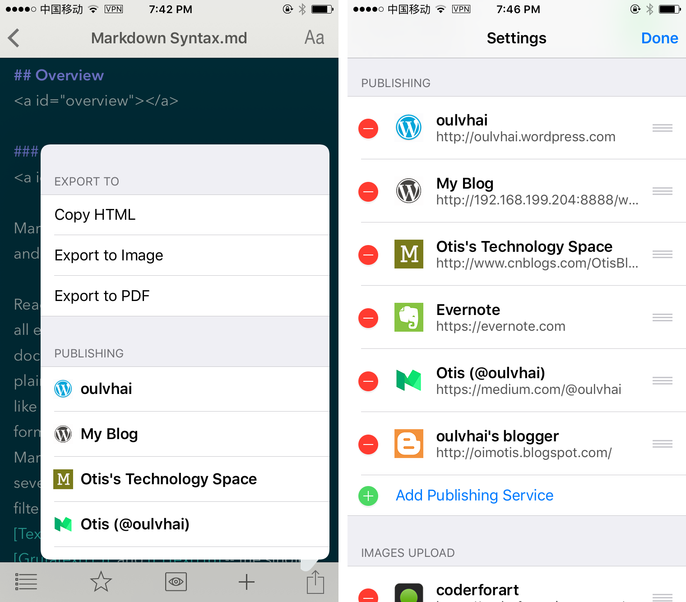

MWeb first is a Markdown editor, the use of Github Flavored Markdown, referred to as GFM, which is one of the most widely used Markdown syntax. If you do not know what Markdown is, it is recommended to take a look at the Markdown Syntax documentation. GFM in addition to support the official syntax, but also extended a lot of grammar, the specific circumstances will be described later in this article.
As shown in the figure above, the MWeb for iOS is a convenient way to input the Markdown syntax. Click the (M) button to switch to Markdown keyboard.
As shown in the figure to the left, the upper right corner of the button to quickly set the editor's font size and line height, change the editor style and preview style. At the bottom of the five buttons: document outline, Favorites, preview mode/edit mode, new document, share.

The MWeb for iOS, like MWeb for Mac, also supports publishing documents to Wordpress, Metaweblog API, Evernote, Blogger and Medium. It also support update the published document. If the document has images, will automatically upload. Click the Share button as shown on the left of the image above to use this feature. In addition, MWeb for iOS also supports local images upload, to use these features, just go to the settings page to add the image upload services. Please refer to the following three articles for more detail:
Home page has two section: recent and favorites. You can add everything to the favorites section, for example: document, folder, library category. Just click the "★" button.
For open external Markdown document, please use "+" button of Home page. As shown in the figure on the right.
Notice: move the file or folder is not supported in this version, that feature will be supported in version 2.3.x, Dropbox and WebDAV support also available in version 2.3.x.
As shown in the figure, click the (i) button in the "demo folder" folder will go to the settings, as shown in the figure on the right.
To use the documents library, please enable iCloud in the settings page (default is enable) and then enable the "MWeb for Mac Library". When the document library is enabled, if the document library is not synchronized, the following text prompts are displayed:
Please check iCloud Drive MWeb's documents folder on your Mac. When you found a folder name is "mweb_documents_library", please open MWeb for Mac, go to the Preferences - General - Library Location section, click "Save As" button and choose the "mweb_documents_library" folder for your Library Location. That is OK! Now you can back to MWeb for iOS and wait for iCloud sync the Library.
Notice: for iCloud Drive on Mac, some users will sync to Mac quickly, some will sync one or two days, but some never sync!
You can try to go to iOS system settings - iCloud, close iCloud Drive and open again.
If still not work, please wait for Dropbox and WebDAV support in version 2.3.x
End a line with two or more spaces + enter.
Just typing enter to newline,please go to Settings and enable "Translate newlines to <br> tags" ( default is enable ).
Example:
- [ ] task one not finish `- + SPACE + [ ]`
- [x] task two finished `- + SPACE + [x]`
Result:
- + SPACE + [ ]
- + SPACE + [x]
Setting image width, align left, align right, align center syntax. For example: , -w450 mean set the image width: 450.  --> align left, width:500.  --> align right, width:500.  --> align center, width:500.
Example:
```js
function fancyAlert(arg) {
if(arg) {
$.facebox({div:'#foo'})
}
}
```
Result:
function fancyAlert(arg) {
if(arg) {
$.facebox({div:'#foo'})
}
}
Example:
First Header | Second Header
------------ | -------------
Content from cell 1 | Content from cell 2
Content in the first column | Content in the second column
You can create tables by assembling a list of words and dividing them with hyphens - (for the first row), and then separating each column with a pipe |:
Result:
| First Header | Second Header |
|---|---|
| Content from cell 1 | Content from cell 2 |
| Content in the first column | Content in the second column |
Example:
(like ~~this~~)
Result:
Any word wrapped with two tildes (like this) will appear crossed out.
Use double US dollors sign pair for Block level Math formula, and one US dollor sign pair for Inline Level.
For example this is a Block level $$x = {-b \pm \sqrt{b^2-4ac} \over 2a}$$ formula, and this is an inline Level $x = {-b \pm \sqrt{b^2-4ac} \over 2a}$ formula.
\\[ \frac{1}{\Bigl(\sqrt{\phi \sqrt{5}}-\phi\Bigr) e^{\frac25 \pi}} =
1+\frac{e^{-2\pi}} {1+\frac{e^{-4\pi}} {1+\frac{e^{-6\pi}}
{1+\frac{e^{-8\pi}} {1+\ldots} } } } \\]
Result:
For example this is a Block level \[x = {-b \pm \sqrt{b^2-4ac} \over 2a}\] formula, and this is an inline Level \(x = {-b \pm \sqrt{b^2-4ac} \over 2a}\) formula.
\[ \frac{1}{\Bigl(\sqrt{\phi \sqrt{5}}-\phi\Bigr) e^{\frac25 \pi}} =
1+\frac{e^{-2\pi}} {1+\frac{e^{-4\pi}} {1+\frac{e^{-6\pi}}
{1+\frac{e^{-8\pi}} {1+\ldots} } } } \]
Example:
This is a footnote:[^sample_footnote]
Result:
This is a footnote:1
Example:
[TOC]
Result:
footnote text detail... ↩